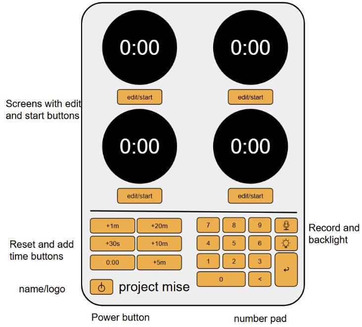
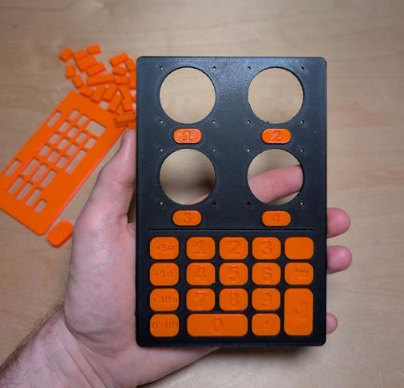

Hardware Project
Mise Kitchen Timer
A multi-burner kitchen timer because I can't find one that I like.
00Summary
I'm tired of using my oven timer, microwave timer, and phone timer at the same time.
As a slightly-above-average home chef, I use every timer I have and then remember what they were set for. Is this beeping for the rice or for the chicken? Seems easy to remember until you have three things cooking and are prepping the rest.
Not only do I want a timer for every burner but I want it to be stylish also. Those industrial kitchen row timers are ugly and don't belong in my kitchen. I need something stylish and functional; something that maps directly to each burner with a glance.
- Project
- Mise Kitchen Timer
- Type
- Hardware and Embedded Software
- Status
- Working on it
- Follow Along
- LinkedIn ↗
- Name
- Current project name is Mise based on the french term "mise en place" which means "everything in its place". Might end up changing the name who knows.
01Development Progress
This project is the reason why I finally talked myself into buying a 3D printer for prototyping. The printer is a Prusa Core One Plus and it's awesome.
Side note: Powerpoint is great for quick visual mock ups.
Current project name is Mise based on the french term "mise en place" which means "everything in its place". Might end up changing the name who knows.
Right now I am busy finalizing the physical size and trying to learn how to make my own circuit boards. Check back here every so often to see if I've made any more progress.

image 0: First visual mock up.
image 1: First case print at full scale.Reserve Yours
Are you a home chef that only settles for the best?
I am currently developing these Mise timers. If you are interested in buying one, shoot me an email and I'll get you on the list.